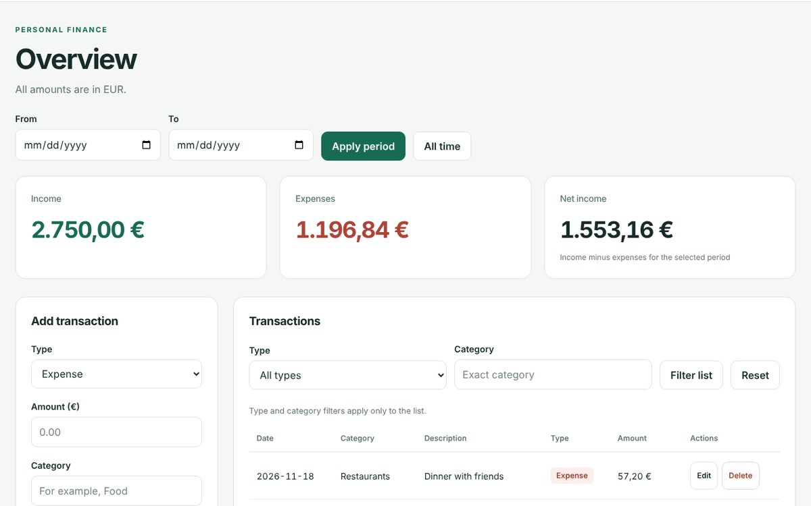
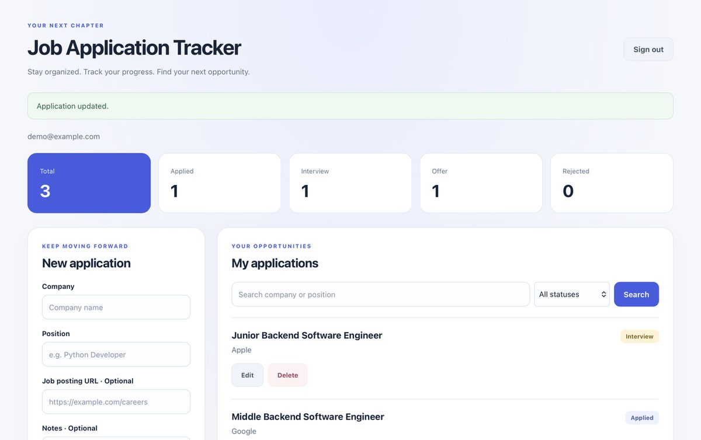

The foundations
Learning by doing.
With Python, I've built small games and a flashcard app. JavaScript then introduced me to making websites interactive.
Curious learner. Aspiring developer.
I'm from Baku, and I'm learning to build my own software. What I enjoy about Python is turning an idea into something people can actually use, one step at a time. My next goal is an apprenticeship in application development in Germany.
01 / About me
I'm Farid Hajiyev, based in Baku, Azerbaijan. I study programming independently through courses, practical exercises, and personal projects. Along the way, I've found that I especially enjoy Python and the logic behind an application.
Getting something to work is a starting point. I also want to understand how a request moves through an application, where its data is stored, and why a user can only access their own records.
German is part of my everyday life, too. I hold a Goethe B2 certificate and continue to read German texts, practise speaking, and learn to explain my technical decisions in German.
I'm also a professional orchestra musician. Years of daily practice taught me discipline, patience, and how to work as part of a team. Away from the screen, I go to the gym regularly.
02 / My learning journey
From small exercises to tested applications people can use online.
The foundations
With Python, I've built small games and a flashcard app. JavaScript then introduced me to making websites interactive.
The next step
Today, I connect user interfaces with FastAPI and PostgreSQL. I'm learning about APIs, authentication, access control, database migrations, and automated testing.
How I learn
I break new topics into small steps, try them out, and revisit the difficult parts. Courses and AI tools support my learning. My goal is to explain the code myself and become increasingly independent in writing it.
03 / My next step
I'm looking for an apprenticeship in application development (Fachinformatiker für Anwendungsentwicklung) in Germany. I want to experience how a development team plans tasks, discusses solutions, and improves software together.
I bring hands-on project experience and a willingness to keep strengthening my foundations. I'm especially looking forward to technical feedback and gradually taking on more tasks independently.
04 / Selected work
Two full-stack projects with live demos, automated tests, and continuous integration.

A web application for tracking income and expenses in euros, with categories, date filters, and a summary of net income. Each user can only access their own transactions.

A personal overview of job applications with status tracking, notes, search, filters, pagination, and statistics. The React frontend communicates with a protected FastAPI backend.
The free servers fall asleep when unused, so the first visit can take up to a minute.
05 / Technical foundations
Python · FastAPI · Pydantic
REST APIs · JWT · Access control
PostgreSQL · SQL · SQLAlchemy
Alembic migrations
pytest · Test databases
GitHub Actions
JavaScript · React · HTML · CSS
Git · GitHub · Linux terminal
I'd welcome the opportunity to learn more about your team and share my learning journey in a conversation.